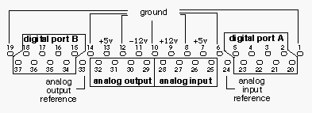

|
This documentation applies to the BeBox hardware only.
|
| The Device Kit Table of Contents | The Device Kit Index |
|
The GeekPort is a piece of hardware on the back of the BeBox that communicates with external devices. Depending on how you use the GeekPort's ports, you can get up to 24 independent data paths:
To provide high-level access to these data paths, the Device Kit defines three classes:
The signals and data that these classes read and write appear at the GeekPort connector, a 37-pin female connector that you'll find at the back of every BeBox. In addition to the pins that correspond to the analog and data paths, the GeekPort provides power and ground pins. Everything you need to feed your external gizmo is right there.
The GeekPort connector's pins are assigned thus:

The GeekPort provides four channels of simultaneous analog-to-digital (a/d) and four channels of simultaneous digital-to-analog (d/a) conversion. The signals that feed the ADC arrive on pins 25-28 of the GeekPort connector; the signals that are produced by the DAC depart through pins 29-32 (as depicted below). Pins 24 and 33 are DC reference levels (ground) for the a/d and d/a signals, respectively (don't use pins 24 or 33 as power grounds):
In the illustration, the a/d and d/a pins are labelled ("A2D1", "A2D2", etc.) as they are known to the BA2D and BD2A classes.
If you've read the GeekPort hardware specification, you'll have discovered that the ADC can be placed in a few different modes (the DAC is less flexible). The BA2D and BD2A classes (more accurately, the ADC and DAC drivers) refine the GeekPort specification, as described in the following sections.
|
The ADC accepts signals in the range [0, +4.096] Volts, performs a linear conversion, and spits out unsigned 12-bit data. The 4.096V to 12-bit conversion produces a convenient one-digital-step per milliVolt of input.
A/d conversion is performed on-demand: When you read a value from the ADC, the voltage that lies on the specified pin is immediately sampled (this is the "Single Shot" mode described in the GeekPort hardware specification). In other words, the ADC doesn't perform a sample and hold—it doesn't constantly and regularly measure the voltages at its inputs. Nonetheless, you can't retrieve samples at an arbitrarily high frequency simply by reading in a tight loop. This is because of the "sampling latency": When you ask for a sample, it takes the driver about ten milliseconds to process the request, not counting the (slight) overhead imposed by the C++ call (from your BA2D object). Therefore, the fastest rate at which you can get samples from the ADC is a bit less than 100 kHz.
Furthermore, the ADC driver "fakes" the four channels of a/d conversion. In reality, there's only one ADC data path; the driver multiplexes the path to create four independent signals. This means that the optimum 100 kHz sampling frequency is divided by the number of channels that you want to read. If all four channels are being read at the same time, you'll find that successive samples on a particular channel arrive slightly less often than once every 40 milliseconds (a rate of < 25 kHz).
Finally, the ADC hardware is shared by the GeekPort and the two joysticks. This cooperative use shouldn't affect your application—you can treat the ADC as if it were all your own—but this increases the multiplexing. In general, joysticks shouldn't need to sample very often, so while the theoretical "worst hit" on the ADC is a sample every 60 milliseconds, the reality should be much better. If we can assume that a joystick-reading application isn't oversampling, then the BA2D "sampling latency" should stay near the 10 milliseconds per channel measurement.
The DAC accepts 8-bit unsigned data and converts it, in 16 mV steps, to an analog signal in the range [0, +4.080] Volts. Again, the quantization is linear. The DAC output isn't filtered; if you need to smooth the stair-step output, you have to build a filter into the gizmo that you're connecting to the GeekPort.
Each of the d/a pins is protected by an in-series 4.7 kOhm resistor; however, pin 33, the d/a DC reference (ground) pin, is not similarly impeded. If you want to attach an op-amp circuit to the DAC output, you should hang a 4.7 kOhm resistor on the ground pin that you're using.
When you write a digital sample to the DAC, the specified pin is immediately set to the converted voltage. The pin continues to produce that voltage until you write another sample.
Unlike the ADC, the DAC is truly a four-channel device, so there's no multiplexing imposition to slow things down. Furthermore, writing to the DAC is naturally faster than writing to the ADC. You should be able to write to the DAC as frequently as you want, without worrying about a hardware-imposed "sampling latency."
The following illustration shows the disposition of the GeekPort connector pins as they are assigned to the digital ports:
Each pin in a digital port transmits the value of a single bit; the pins are labelled by bit position. Thus, A0 is the least significant bit of digital port A, and A7 is its most significant bit. You can use any of the seven ground pins (1, 6, 8, 10, 12, 14, and 19) in your digital port circuit. The unmarked pins (24-33) are the analog ports; see the BA2D and BD2A classes for more information on these ports.
Devices that you connect to the digital ports should send and (expect to) receive voltages that are below 0.8 Volts or above 2.0 Volts. These thresholds correspond, respectively, to the greatest value for digital 0 and the least for digital 1 (as depicted below). The correspondence to bit value for voltages between these limits is undefined.
Although there's no lower voltage limit for digital 0, nor upper limit for digital 1, the BeBox outputs voltages that are no less than 0 Volts, nor no more than +5 Volts. Your input device can exceed this range without damaging the BeBox circuitry: Excessive input emf is clipped to fall within [-0.5V, +5.5V].
Be aware that behind each digital port pin lies a 1 kOhm resistor.
| The Device Kit Table of Contents | The Device Kit Index |
Copyright © 2000 Be, Inc. All rights reserved.
Text last modified